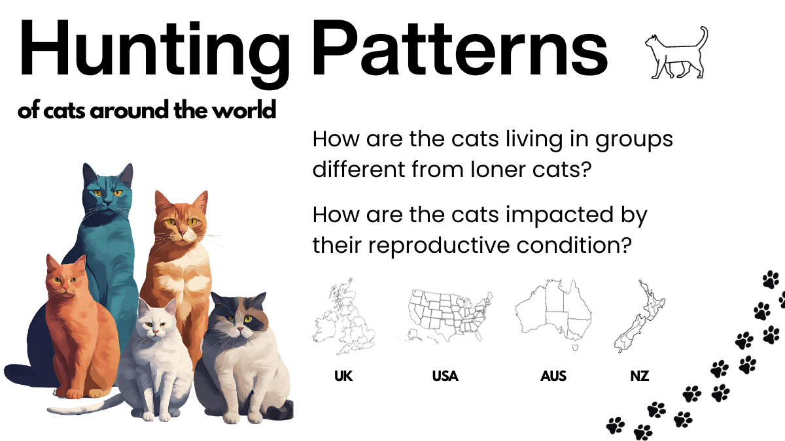
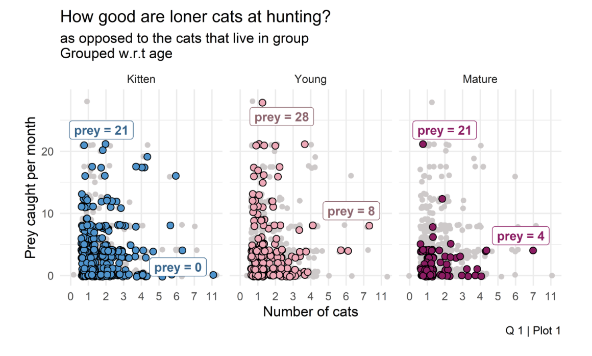
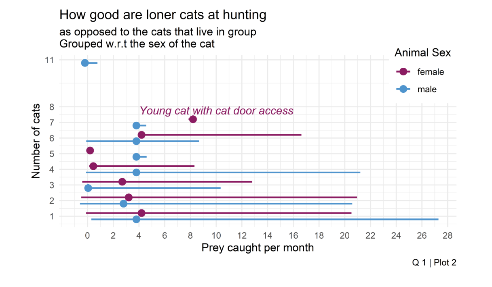
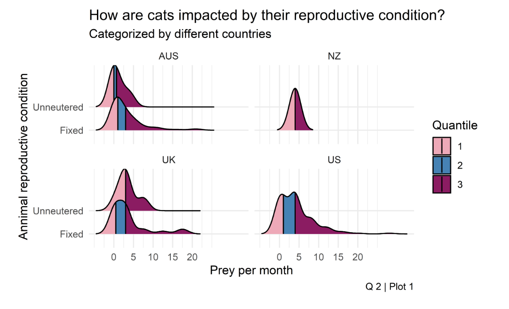
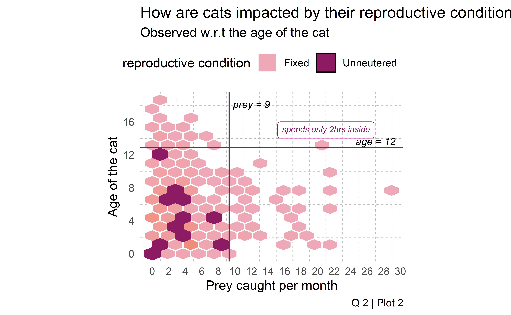

Paws N‚Äô Patterns üêæ
INFO 526 - Project 1
Abstract
Our project aims on analyzing cat hunting behaviors. Domestic cats (Felis catus) are a subject of conservation concern due to their annual predation of billions of native prey. However, the ecological significance of these pets as predators lacks clarity when spatial context is not taken into account [1]. Our data set consist of pet cats hunting details from different countries. Our project aims to address two key questions: Do cats living together exhibit hunting skills better than solitary cats and does the reproductive status of cats affects their hunting behavior.
Introduction

Our team decided to analysis the Pet Cats data set from Movebank for Animal Tracking Data, collected from volunteers using GPS sensors on their pet cats around UK, US, Australia and New Zealand. This data set contains information on individual cat characteristics, including age,gender, neuter status and hunting behavior along with timestamped GPS data. Since cats having a fascinating characteristics, our team has chosen to utilize this data set to gain a valuable insights into cat hunting behaviors. We aim to explore whether the number of cats living together has any impact on hunting behavior and whether the reproductive status influences their hunting patterns.
Each country data set is divided into two subsets. The first subset comprises observations of 11 variables, providing data such as ground speed, geographic longitude and latitude estimated by sensors, time stamps for sensor measurements, and event IDs. The second subset contains observations of 16 variables and primarily describes the number of cats living in a house, whether they are allowed to hunt, their prey per month, the type of food that the cats consume, reproductive condition, and the sex of the animals. For this project, our team has utilize this data to create visualizations aimed at analyzing hunting behavior.
Question 1 : Investigating the Hunting Abilities of Cohabitating Cats vs. Solitary Cats
Introduction
Are the cats which live together better at hunting than those which live alone?
In this question, we are investigating whether cats that live together exhibit better hunting abilities compared to cats that live alone. Our interest lies in understanding if the presence of other cats in the same living environment influences the hunting skills and behavior of individual cats. To explore this question, we have aggregated data from different countries into a single data set. We are utilizing four key features from the data set: the number of cats (n_cats), the number of prey caught per month (prey_per_month), the age of the cats, and we are additionally using the feature of the cat’s sex to analyze hunting behavior in relation to gender.
Approach
Our initial plot is a jitter plot illustrating the hunting abilities of cats. We have categorized the cats into three distinct age groups: kittens (0 to 5 years), young cats (5 to 10 years), and mature cats (above 10 years). The x-axis displays the number of cat data, while the y-axis represents the prey caught per month. The plot is divided into three segments based on age groups. We believe that segmenting the jitter plot by age group is a valuable approach for assessing the hunting capabilities of cats in relation to their age.
For the second plot, we have chosen a line plot to visualize the hunting behavior of cats in relation to their gender. The x-axis represents the number of prey caught, while the y-axis indicates the number of cats. This line plot illustrates the average value of prey caught with respect to gender, allowing us to compare the hunting performance of male and female cats.
Analysis


Discussion
The primary goal of our initial question was to understand the hunting behavior of cats living together compared to those living alone. To assess hunting abilities based on age, we categorized cats into three groups: kittens, young cats, and mature cats. Figure 1 provides insights into this analysis.
The observation from Figure 1 indicates that kittens living alone and those in small groups exhibit superior hunting skills. Notably, the data reveals that cats living alone tend to improve their hunting abilities as they transition from kitten to young age, but this gradually decreases as they mature. Based on the figure, it’s evident that kittens catch approximately 21 prey per month. As they transition to the young age category, the number of prey caught increases to around 28, but it gradually reduces back to 21 when they reach the mature age category. However, Mature cats exhibit diverse hunting success rates, as indicated by the wide range of data in the observations. Additionally, when the number of cats living together exceeds two, the prey caught decreases as the cats age.
Plot 2 provides an illustration of the hunting efficiency of cats, comparing those that live alone to those in groups, with a focus on gender. The dispersion of data points indicates variations in hunting abilities among both male and female cats. The figure reveals that male cats living alone tend to be more efficient hunters, with an average of up to 11 prey per month. There is one notable exception where female cats outperform in hunting, and that is when they have access to a cat door. On average, male cats appear to outperform female cats in terms of prey caught per month.
Question 2 : Exploring the Impact of Reproductive Status on Hunting Patterns in Cats
Introduction
How does the reproductive status of cats influence the hunting pattern?
Our second question focuses on finding the hunting patterns based on the reproductive conditions of the cat. Reproductive status can significantly affect the behavior and activity of cats, and this study seeks to understand whether there are any patterns in hunting activities based on whether cats are neutered or not. For answering this question we have some features from the data set which includes the reproductive condition of the animal (animal_reproductive_condition ) which specifies whether the animal was neutered or not, the number of prey caught per month (prey_p_month ), the time cats spends indoors (hrs_indoors).
Approach
In the first plot, we utilized a ridgeline plot with mean quantiles to investigate the impact of reproductive status on hunting patterns in cats with respect to different countries. Here we are considering four different countries and they are: UK, US, Australia and New Zealand. To conduct this analysis, we encountered missing values in the dataset that were crucial for our research. As a solution, we performed some data sampling. Specifically, the prey caught per month data was missing for the country New Zealand, and we addressed this by filling the gaps with the average mean value. This approach allowed us to gain insights into how reproductive status influences the hunting behavior of cats, even in the presence of missing data.
For the second plot, we employed a hexbin plot to examine the influence of reproductive status on hunting patterns in cats, particularly concerning age. The x-axis represents the prey caught per month, while the y-axis represents the age of the cat. The plot features data points representing neutered and fixed cats, allowing us to visualize how reproductive status relates to hunting behavior in different age groups.
Analysis


Discussion 2
The plot provides valuable insights into the hunting behavior of cats, with a focus on the impact of age and reproductive status. In Figure 1, we explore cats’ hunting behavior based on their reproductive condition. To facilitate our analysis, we’ve segmented the data by countries, including Australia, New Zealand, the United Kingdom, and the United States. The ridgeline plot reveals a consistent trend: neutered cats tend to engage in more hunting across all these countries. The majority of the data falls within the range of the 25th and 50th quantiles. However, it’s important to note that there is a lack of unneutered data for the countries New Zealand and the United States. This data gap should be considered when interpreting the results for these specific countries. Cats in the US and UK tend to catch less prey per month compared to their counterparts in AUS and NZ. This could be due to various factors such as differences in local ecosystems, cat populations, or even cultural attitudes towards outdoor cats.
The reproductive condition of cats seems to have a significant impact on their hunting habits. Fixed cats tend to catch higher amount of prey than unneutered ones. We can see that the first and second quantiles for fixed cats across AUS and UK hold majority of cats than that for unneutered cats. This could be due to hormonal changes or behavioral differences associated with these conditions.
The figure 2 offers provides valuable insights into the hunting behavior of cats, with a focus on the impact of age and reproductive status. Notably, it reveals that as cats grow older, their prey-catching activity decreases. However, the data highlights a fascinating trend among Fixed cats, particularly those aged 6 to 12 years, who exhibit the highest hunting prowess. It’s intriguing to note that older Unneutered cats, beyond 12 years become less active hunters, which might imply a decrease in hunting behavior with age and reproductive condition. The highest prey caught by an unneutered cat is far less than a fixed cat of equivalent age.
This observation could be a smaller representation of older Unneutered cats in the study or possibly due to older unneutered cats hunting less. In summary, the cat’s age and reproductive status play a substantial role in influencing their hunting habits, with younger Fixed cats being the most proficient hunters.
References
72.9% of cats in AUS are allowed to go outside, extensive hunting threatens local wildlife: (@sagepub.com)
26% of cats are not neutered in UK as they don’t go outside much: Cats Report 2022
17% of pet owners in US feed free-roaming cats: Pets by the numbers | HumanePro
>90% cat owners of New Zeland indicated that their cats were flea treated, and desexed, has easy access to cat doors: (@mdpi.com)